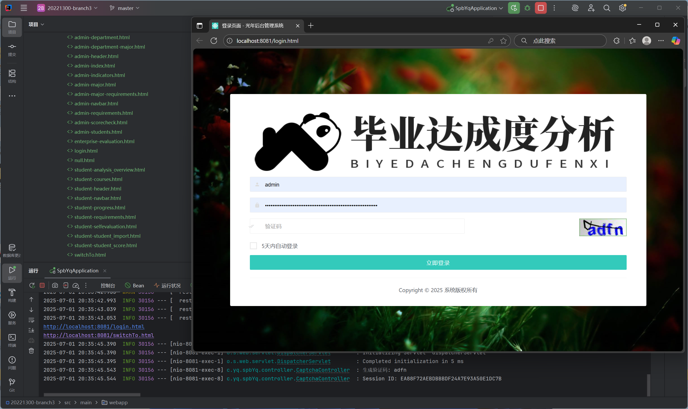
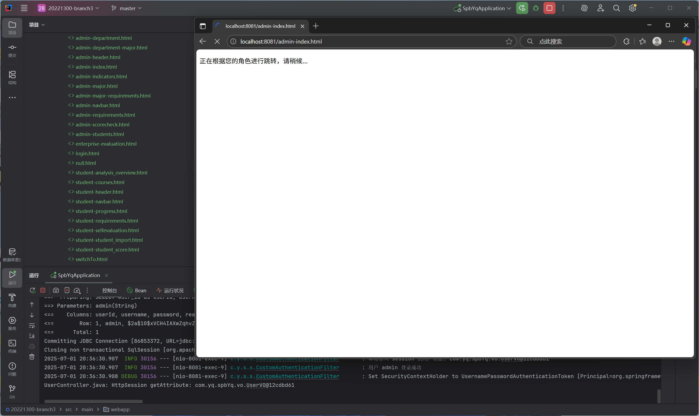
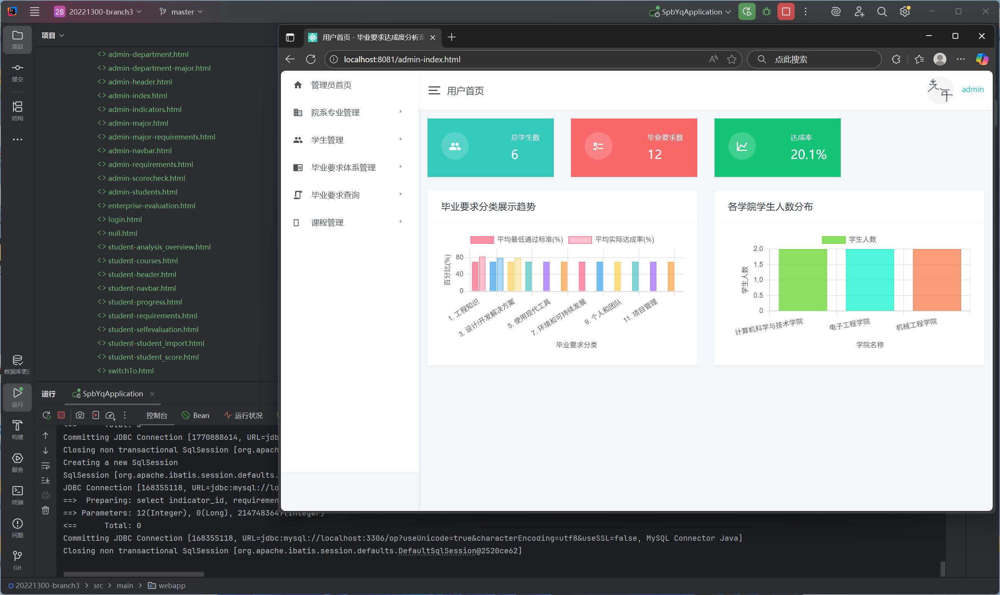
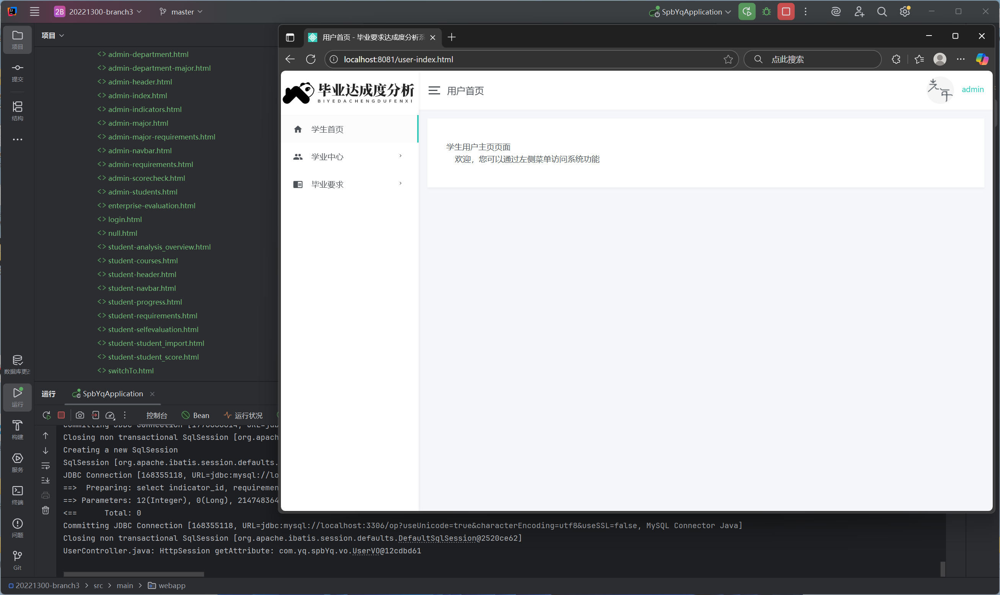
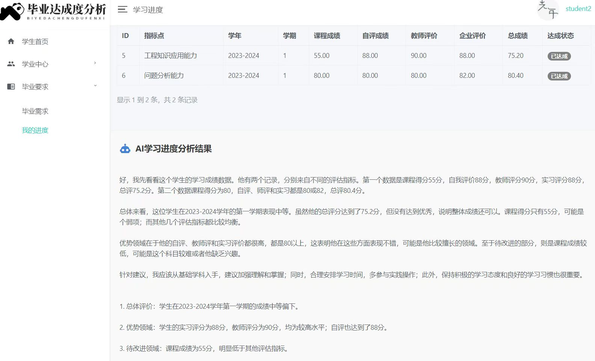

毕业要求达成度分析系统
你可以点击以下链接查看与下载相关资源：
项目源码可在GitHub仓库查看与下载：项目地址（github）
简介
学校内软件工程实践结课小组作业，我负责的部分为登录功能及页面、登陆成功根据不同用户跳转不同页面、拦截器注册创建与所有页面顶部与侧边栏的模板与加载方法编写。
项目包含不同角色验证登录，验证码功能，拦截未登录用户，管理员与老师角色对课程与学生相关功能的增删改查，学生角色相关增删改查等。
由于本项目分析功能非本人完成，但小组内商量决定分析功能提供AI接口，将学生毕业相关信息等发送给本地部署AI，并将分析传回给平台向学生进行展示
项目相关截图：
登录页面以及控制台验证码提示
登陆成功进入SwitchTo根据角色跳转
管理员首页界面示例
用户首页界面示例
学生毕业要求达成度分析
技术栈与特点
开发语言与技术栈：
- HTML 44.0% —— 构建项目前端页面结构与样式，多个HTML文件定义不同页面布局，同时引入Bootstrap和Material Design Icons等CSS库，提升页面没关与响应式布局能力。
- JavaScript 29.1% —— 用于前端页面交互，使用jQuery库进行DOM操作与AJAX请求，实现页面数据动态加载和交互效果。
- Java 26.9% —— 后端开发中使用，利用Spring框架实现了RESTful API，处理相关查询增删改查等业务逻辑。
- 数据库：使用MySQL数据库，根目录下备份了sql脚本文件，创建项目相关示例的关系型数据库存储用户、院系、专业、毕业要求等等。
- 项目框架：使用Spring框架搭建项目，通过`@RestController`和`@RequestMapping`注解实现RESTful API开发，利用依赖注入管理对象间依赖关系。
- 接口生成：部分Mapper映射使用EasyCode生成完成增删改查接口，后续根据需求手动进行接口增加修改。
项目特点：
- 项目功能齐全，覆盖毕业要求管理、专业设置、学生信息管理、课程管理、成绩管理等多个方面，以满足多业务需求
- 前后端分离设计，前端使用HTML、CSS与JavaScript实现，后端使用Java与Spring框架处理业务逻辑与数据存储
- 利用导入的Chart.js库将数据可视化以图标等现实展示，多角度直观供用户了解数据分布或学生情况
- 模块化设计功能，将不同功能类封装在不同类与文件中，提高代码复用性与可维护性